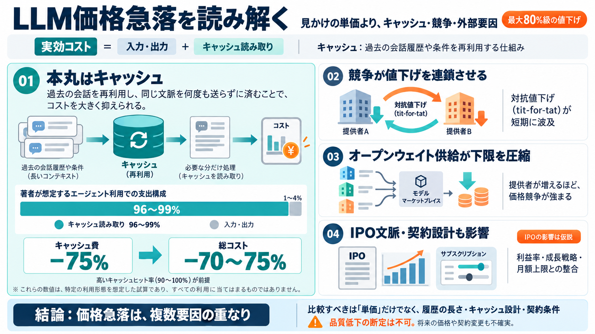

OpenAI and Anthropic cut their LLM prices by up to 80% within a few months. Why? | Max Woolf's Blog
### July 24, 2026# Anthropic announced Claude Opus 5, which was a long-awaited major-version update given the impact Op…

OpenAIとAnthropicの急激な値下げを、入力/出力ではなくキャッシュ読み取り、競争（tit-for-tat）、外部要因（IPO文脈）から読み解く。 （日本語補足: キャッシュ=過去履歴の再利用領域）
短期間での大幅な価格改定は通常起きにくい。だから著者は、運用効率や競争だけでなく、別の力学も混ざっている可能性を疑う。
エージェント型コーディングでは、過去会話を参照するためキャッシュ読み取りが支出の中心になりやすい。すると値下げの効き目は“道路料金（キャッシュ）”に左右される。
著者の説明では、エージェント利用でキャッシュ読み取りが総トークン支出の96〜99%を占め、ヒット率は90〜100%。キャッシュを75%減らせば、総コストも70〜75%減り得る。
GPT-5.6 Luna、Sonnetの価格固定化、Sol/Fableの値付け変更などが短い間隔で起きており、著者は「互いの反応が反映される（tit-for-tat）」と見る。
OpenRouter上で多数の推論提供者がオープンウェイト（例：DeepSeek Flash）を低価格で提供できると、実効コストが広告値より有利になりやすい。供給者が多いほど価格競争は強まる。
両社がIPO準備（噂）に近い場合、値下げはS-1の見栄えに不利にも見える。ただし研究開発由来の損失や、推論利益率の可能性があり一概に言えない。
著者は、月額上限を下げつつも、効率化でトータルが中立になるよう調整した可能性を述べる。値下げは“単価”だけでなく利用量設計に波及する。
推論では過去の会話履歴や条件を毎回参照する。推論基盤がそれを毎回“計算し直さず”、保持・再利用できる形をキャッシュ（Cache）として扱う。
出力品質を落として安くした形跡は“見えていない”が、長期・統計的な横断検証までは提示されていない。将来の値上げシナリオも不確実で、契約変更や品質変動リスクが残る。
価格急落は、(i) キャッシュ削減で実効が激減、(ii) 競争の連鎖で値下げが伝播、(iii) オープンウェイト供給が価格下限を圧縮、(iv) IPO文脈が説明を揺らす—という複合で理解するのが安全。
下記は本文の前提（時系列報道、キャッシュ支配、IPO文脈）を裏取りするための参照先の方向性。リンクが特定できない箇所は“主題名”として記載。
### July 24, 2026# Anthropic announced Claude Opus 5, which was a long-awaited major-version update given the impact Op…
OpenAI cut prices on its newest AI models by half on September 22, 2026, rolling out GPT-6 Sol and GPT-6 Luna as direct …
| Model | Input ($/1M tokens) | Output ($/1M tokens) | Output:Input ratio | --- --- | | DeepSeek V4-Flash | $0.14 | $0…
[]( From Anthropic’s upcoming IPO to OpenAI’s funding round that could value the AI giant at more than $1 trillion, CNB…
OpenAI cut GPT-5.6 Luna’s price by 80%, bringing it to 20 cents per million input tokens and $1.20 per million output to…